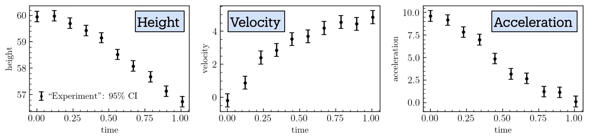
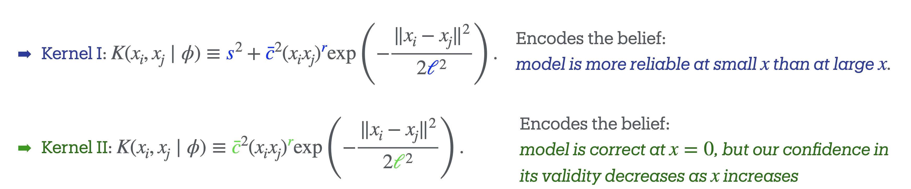
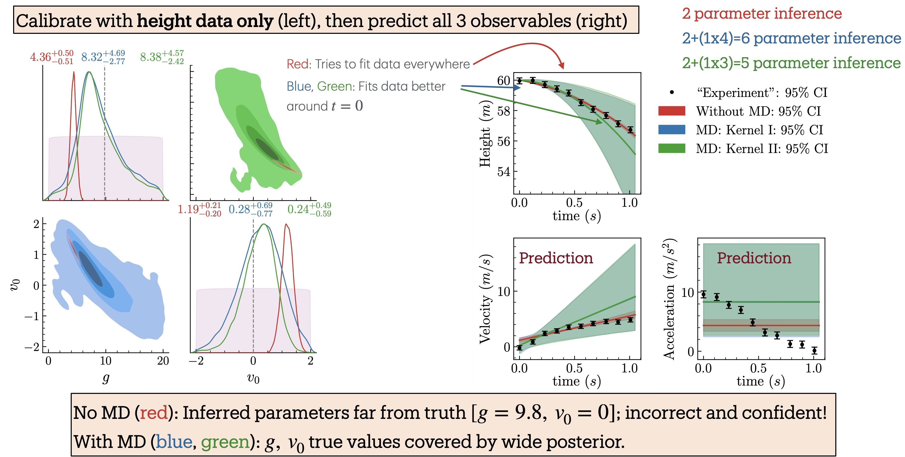
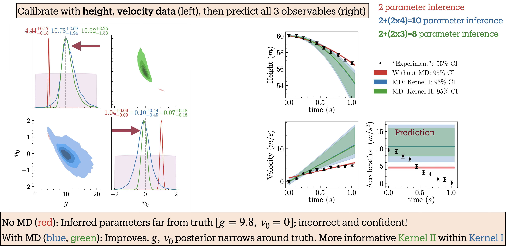
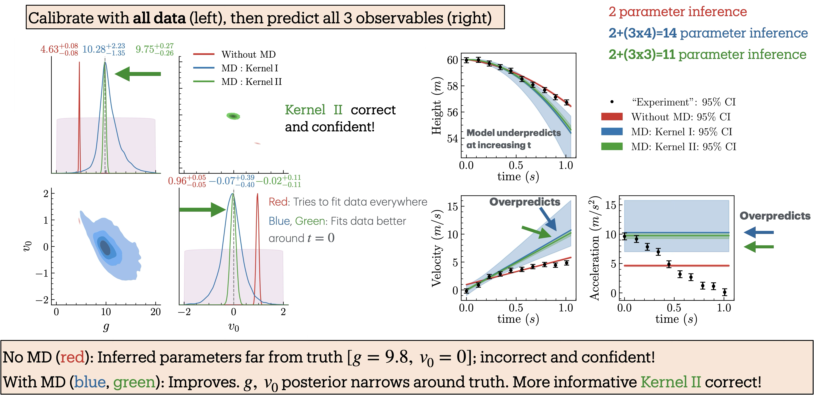

15.3. The ball-drop model#
Overview#
We use the canonical “Ball Drop Experiment” (popularized by statistician Dave Higdon) to show how the BOH approach works for robust extraction of physical quantities from a calibration. The story is that a ball is dropped from a tower of height \(h_0\) at initial time \(t_0=0\) with initial velocity \(v_0=0\). The height from the ground is recorded at discrete time points. The true data is generated based on a model with drag, and includes uncorrelated Gaussian measurement errors. The aim is to extract the value of acceleration due to gravity, \(g\).
However, we seek a value for \(g\) using a theoretical model without air resistance. (In the demo notebook in Section 15.4 we consider only measurements of the height of the ball; a more general version with results shown below also has measurements of velocity and acceleration.) So the problem is that the data is noisy and our theoretical model (free fall without drag) is incorrect. How can we best formulate our analysis such that the extraction of \(g\) (and other observables) is robust? I.e., that we get a distribution for \(g\) that covers the true answer with plausible uncertainty.
Statistical formulation#
We will follow the article by Higdon et.al. The statistical equation accounting for model discrepancy is:
where \(x\) is the input vector (time in the case of the ball drop experiment) of length \(n\).
We shall denote the input domain as \(\{x_1,\cdots,x_n\}\in \chi_*\).
The above equation should be understood as an equation which holds on the range (set of all possible outcomes) of the probability distributions. It means that a sample drawn at a given \(x_i\) from the probability distributions \(\mathrm{pr}(y)\) should be equal to the sum of the sample drawn from each of the distributions \(\mathrm{pr}(\eta|{\boldsymbol \theta})\), \(\mathrm{pr}(\delta|{\boldsymbol \phi})\) and \(\mathrm{pr}(\epsilon|{\boldsymbol \sigma_{\boldsymbol \epsilon}})\).
Note that for given \(x_i\), \(\mathrm{pr}(\eta(x_i)|{\boldsymbol \theta}) = \delta(\eta(x_i)-\eta(x_i;{\boldsymbol \theta}))\) is deterministic since the model is deterministic given \({\boldsymbol \theta}\) (note: \(\delta\) is the Dirac delta function).
In Eq. (1), \(y(x_i)\) are vectors of the measured observables (velocity and height) at each input point \(x_i\).
The error in the measurement of \(y(x_i)\) is represented by \(\epsilon(x_i;{\boldsymbol \sigma_{\boldsymbol \epsilon}})\), which is assumed to be independently and identically distributed \(\sim N(0, {\boldsymbol \sigma_{\boldsymbol \epsilon}}^2)\) for each type of observable (velocity and height: \(\{\sigma_v, \sigma_h\} \in {\boldsymbol \sigma_{\boldsymbol \epsilon}}\)).
Note that \(\{\sigma_v, \sigma_h\}\) are fixed constants since we have assumed the distribution for each type of observable to be iid’s. We shall treat them as information `\(I\)’ whenever we write any probability distribution \(\mathrm{pr}(\bullet|\bullet,I)\), and will not state them explicitly.
\(\eta(x;{\boldsymbol \theta})\) denotes the observable predictions of the physics theory given the value of the parameters of the theory \(\{g, \sigma_{v_0}\}\in {\boldsymbol \theta}\).
The stochastic model \(\mathrm{pr}(\delta(x)|{\boldsymbol \phi}) = GP[0,\kappa(x, x';{\boldsymbol \phi})]\), accounts for model discrepancy (discrepancy between the physics model and reality) where \(\kappa\) is covariance kernel of the Gaussian Process (GP) with \(\{\bar{c}_v,\, l_v,\, \bar{c}_h,\, l_h\}\in {\boldsymbol \phi}\) representing the hyperparameters.
We define \(\{{\boldsymbol \theta}, {\boldsymbol \phi}\} \in {\boldsymbol \alpha}\) as a vector containing \({\boldsymbol \theta}\) and \({\boldsymbol \phi}\) for compact notation.
One first sees that a discrepancy model is essential; using a radial basis function (RBF) GP is standard (see Wikipedia RBF article) and one finds good predictions for times where there is data (this is KOH). But the discrepancy model must be more informed for a robust extraction of \(g\); this leads to using a nonstationary GP (in the spirit of BOH, as shown in Section 15.2.
Our simple test system has the ball dropped from a tower of height \(h_0=60\,\)m at time \(t=0\,\)s. Measurements of the ball’s height above the ground, velocity, and acceleration are recorded at discrete time points until \(t=1\),s. (In this example \(x=t\)/(1,s) serves as the unitless input parameter, \(0\leq x \leq 1\).) The true theory, used to generate synthetic experimental data, incorporates a gravitational force \(\mathbf{f}_G=-Mg\,\hat{\bf z}\) and a drag force given by \(\mathbf{f}_D = -0.4 v^2\, \hat{\bf{v}}\). Here, \(M=1\,\)kg is the mass of the ball, \(g=9.8\,{\rm m/s}^2\) the acceleration due to gravity, and we set the initial velocity \(v_0\) to \(v_0=0\,\)m/s.
We assume that the observational errors for height, velocity, and acceleration are independent and identically distributed Gaussian random variables (imagine they are measured with different instruments, so the data errors are uncorrelated).
Synthetic experimental data are generated by sampling from Gaussian distributions with specified standard deviations and with means given by the predictions of the true theory, which are determined by the equations of motion:
{kind=link}

Fig. 15.3 Data for the ball drop experiment, including measurement errors.#
We compare these synthetic data with a theoretical model that neglects the drag force and is governed by the simpler equations of motion:
Here \(h_0=60\,\)m is fixed to the value used in generating the synthetic experimental data. The parameters \(g\) and \(v_0\) are model parameters, which we infer using Bayesian parameter inference (in the demo notebook, for simplicity, only \(g\) is inferred). We incorporate our prior knowledge about the theory’s domain using the two distinct GP kernels presented in Fig. 15.4. Since our model neglects drag forces, we are more confident in its predictions at earlier times (small \(x\)), when the velocity is lower, than at later times (larger \(x\)).
{kind=link}

Fig. 15.4 GP kernels \(\texttt{I}\) and \(\texttt{II}\) for the balldrop analysis.#
In the following figures, we show results with successively more observables included. Fig. 15.5 has only height, Fig. 15.6 has height and velocity, and Fig. 15.7 has height, velocity and acceleration.
{kind=link}

Fig. 15.5 Balldrop analysis with only the height measurements.#
Fig. 15.5 shows both the inferred posteriors for the model parameters and the corresponding model predictions when only the height data is used. We perform Bayesian parameter inference under three scenarios: (i) without the model discrepancy (MD) term (red), (ii) with MD using GP-kernel \(\texttt{I}\) (blue), and (iii) with MD using GP-kernel \(\texttt{II}\) (green). The kernels are defined in Fig. 15.4; their hyperparameters are learned at the same time as the model parameters. Parameter inference is carried out by sequentially incorporating additional observables to examine their influence on the inferred posteriors. The posteriors and predictions for when height and velocity are included are shown in Fig. 15.6 and when height, velocity, and acceleration included are shown in Fig. 15.7.
{kind=link}

Fig. 15.6 Balldrop analysis with both the height and velocity measurements.#
{kind=link}

Fig. 15.7 Balldrop analysis with height, velocity, and acceleration measurements.#
The posteriors incorporating MD (blue and green) consistently cover the true values and become narrower as more observables are included. In particular, the posteriors with MD using Kernel \(\texttt{II}\) (green), which encodes strong prior information about the theory’s domain of validity, are consistently tighter, reflecting greater constraining power, yet remain consistent with those obtained using the more conservative Kernel \(\texttt{I}\) (blue). Remarkably, when acceleration data are included (Fig. 15.7), the posterior with Kernel \(\texttt{II}\) nearly recovers the true parameter values, even though the model predicts a constant acceleration that does not capture the observed decreasing trend in the data. In contrast, the posteriors from the inference without the MD term (red) deviate significantly from the truth and become increasingly narrow as more observables are added, resulting in model parameter estimates that are both incorrect and overconfident.
In the right panels of the figures, the synthetic experimental data are compared with the model predictions generated using the inferred parameter posteriors from the left panels. Notably, predictions with MD (blue, green) match the data at early times and deviate at later times, a behavior that directly results from incorporating prior knowledge about the theory’s domain of applicability into the covariance kernel. In contrast, predictions without MD (red) prioritize achieving the best fit to the data, leading to inaccurate and overconfident parameter estimates.